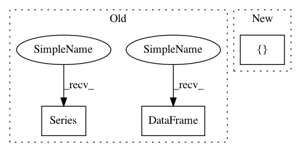

09bfc1b3ef8494cf17a192bbe83df576ccdac86f,cesium/predict.py,,model_predictions,#,16
Before Change
preds = model.predict(feature_df)
if len(preds.shape) == 1:
return pd.Series(preds, index=feature_df.index, name="prediction")
else:
if isinstance(model, GridSearchCV):
columns = model.best_estimator_.classes_
else:
columns = model.classes_
return pd.DataFrame(preds, index=feature_df.index, columns=columns)
def predict_data_files(ts_paths, features_to_use, model,
custom_features_script=None):
After Change
else:
columns = model.classes_
predset["class_label"] = columns
predset["prediction"] = (["name", "class_label"], preds)
return predset
In pattern: SUPERPATTERN
Frequency: 3
Non-data size: 3
Instances
Project Name: cesium-ml/cesium
Commit Name: 09bfc1b3ef8494cf17a192bbe83df576ccdac86f
Time: 2016-06-29
Author: brettnaul@gmail.com
File Name: cesium/predict.py
Class Name:
Method Name: model_predictions
Project Name: DistrictDataLabs/yellowbrick
Commit Name: c6ee8ee45b7b854fa2731b6f238e223ec24e1cab
Time: 2019-07-27
Author: 43993586+naresh-bachwani@users.noreply.github.com
File Name: tests/test_features/test_manifold.py
Class Name: TestManifold
Method Name: test_manifold_pandas
Project Name: janfreyberg/superintendent
Commit Name: 1401e8bd2bdbccbedb696bd742e4934d5ba96fcb
Time: 2018-10-31
Author: janfreyberg@users.noreply.github.com
File Name: tests/test_clustersupervisor.py
Class Name:
Method Name:
Project Name: cesium-ml/cesium
Commit Name: 09bfc1b3ef8494cf17a192bbe83df576ccdac86f
Time: 2016-06-29
Author: brettnaul@gmail.com
File Name: cesium/predict.py
Class Name:
Method Name: model_predictions